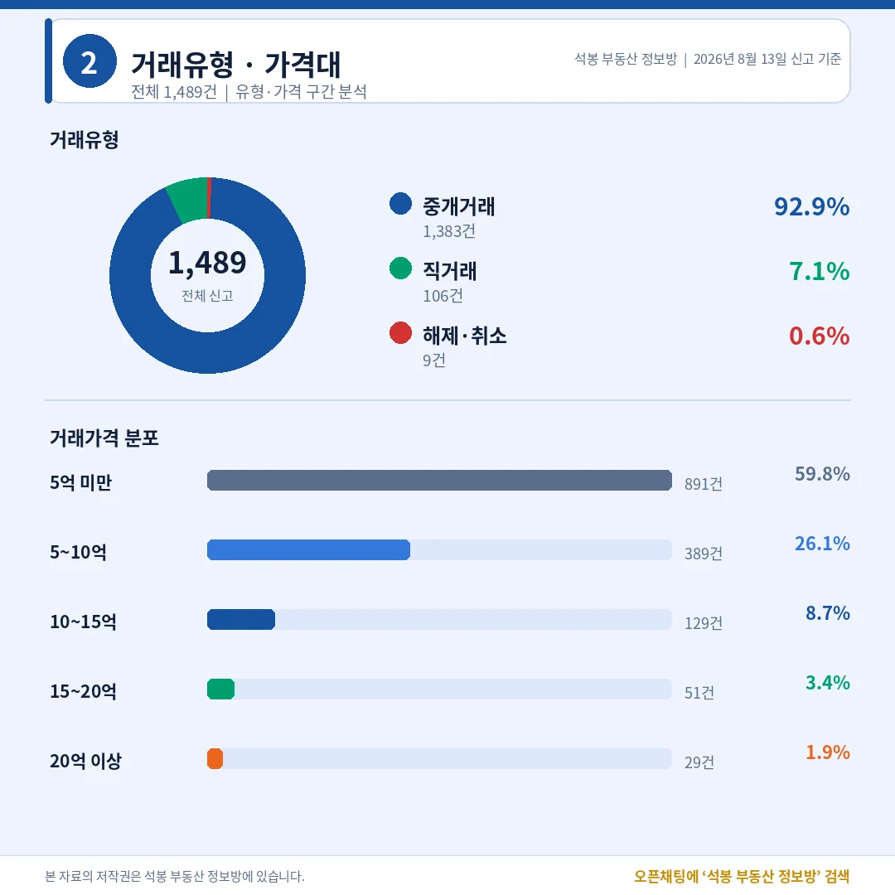
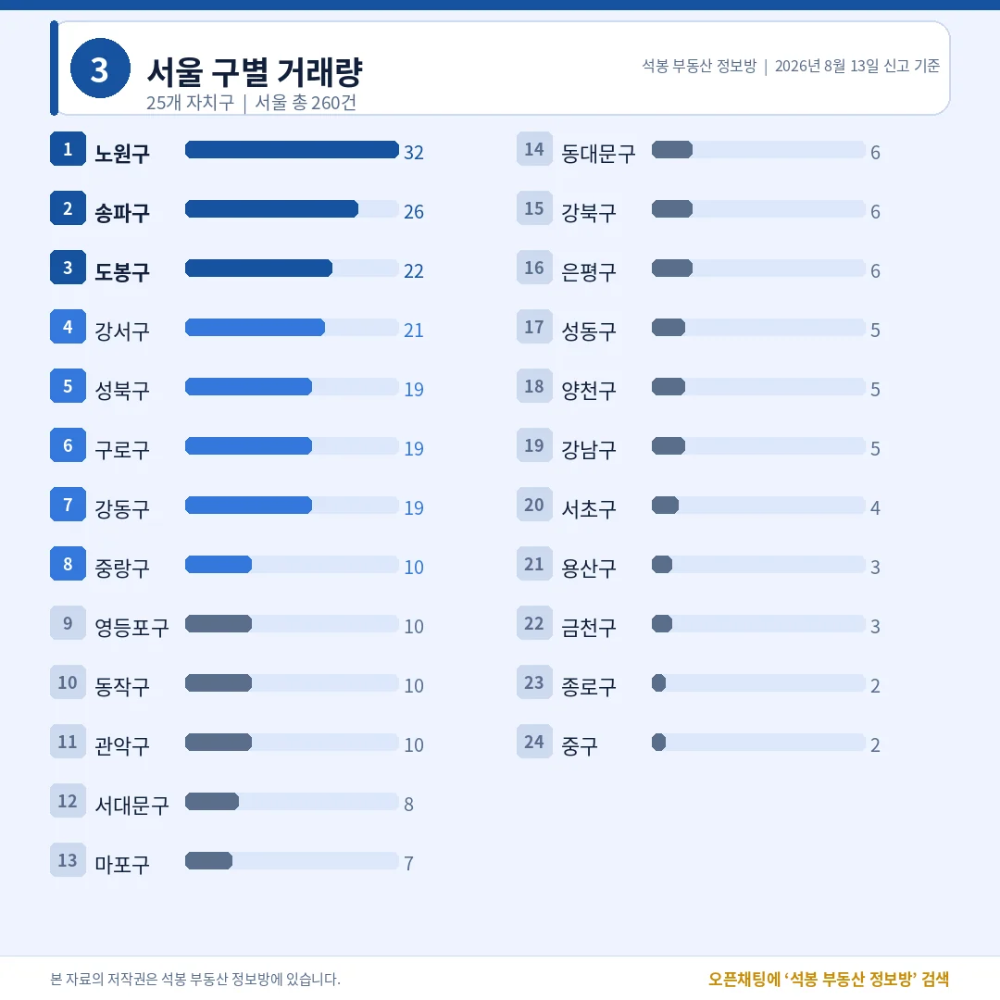
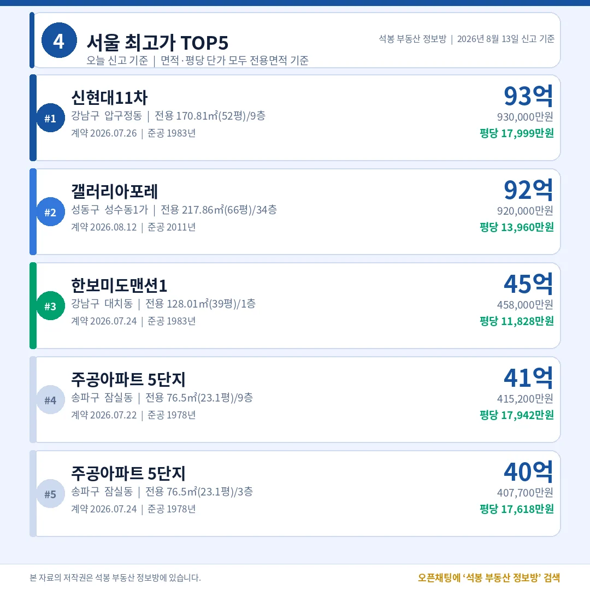
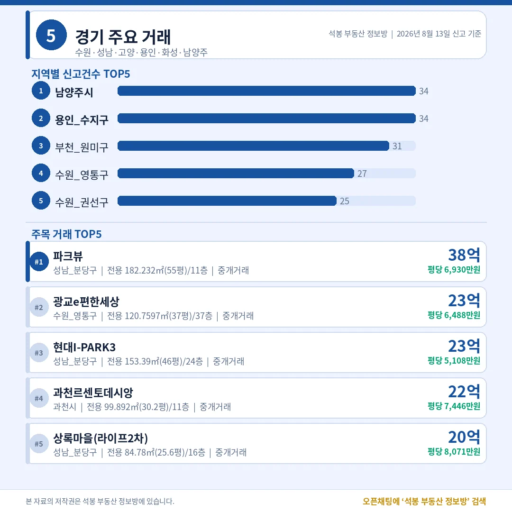
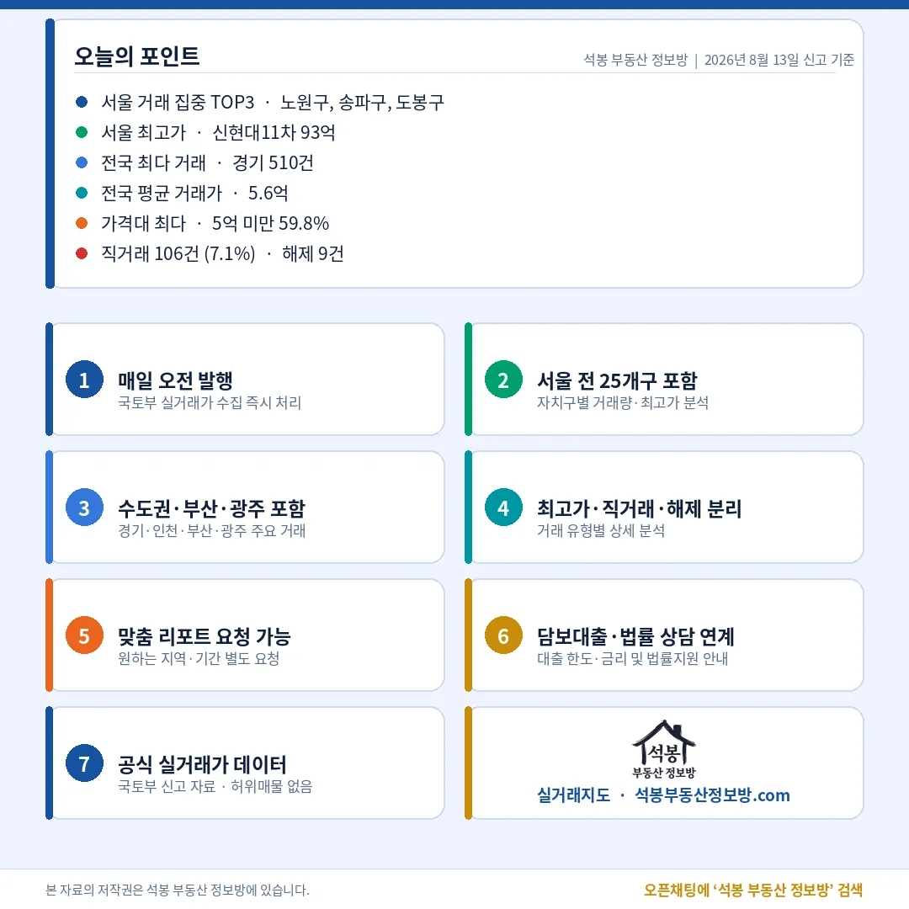

8월 13일 아파트 실거래 신고는 1,489건이었습니다. 열 채 중 여섯 채가 5억 아래였고, 20억을 넘긴 것은 29건뿐이었습니다. 오늘 눈에 띄는 것은 서울 상단 두 건입니다. 1983년에 지은 압구정 아파트와 2011년에 지은 성수 아파트가 1억 차이로 나란히 섰는데, 평당으로 재보면 이야기가 달라집니다. 표로 정리했습니다.
단지명을 누르면 그 단지의 실거래 내역과 시세를 바로 볼 수 있습니다. (면적과 평당 단가는 모두 전용면적 기준)
1,489건 중 891건이 5억 아래, 직거래 106건

거래유형·가격대
직거래 7.1%로 최근 평균 수준이고, 특정 단지 쏠림도 없었습니다.
거래유형
건수
비중
중개거래
1,383건
92.9%
직거래
106건
7.1%
해제·취소
9건
0.6%
가격대
건수
비중
5억 미만
891건
59.8%
5~10억
389건
26.1%
10~15억
129건
8.7%
15~20억
51건
3.4%
20억 이상
29건
1.9%
전국 평균 5.6억, 중위 4.1억. 평균이 중위보다 1.5억 높은 것은 상단 29건이 끌어올린 결과입니다.
여기서부터는 회원에게 보여드립니다
카카오 로그인 3초면 전문을 읽을 수 있습니다. 무료입니다.
가입하시면 지역 시장조사 보고서(약식)를 2회 무료로 요청하실 수 있습니다.
이미 회원이면 같은 버튼으로 로그인만 됩니다
수도권 865건으로 58.1%, 노원 32건에 송파 26건

서울 구별 거래량
서울 260건의 중위는 9.8억, 경기 510건의 중위는 5.0억입니다.
시도
신고
중위
시도
신고
중위
경기
510건
5.0억
충남
57건
1.8억
서울
260건
9.8억
충북
53건
1.9억
인천
95건
3.3억
경북
51건
1.6억
부산
76건
3.9억
전북
48건
2.0억
경남
74건
2.0억
대구
47건
3.9억
경기 510건은 남양주 34건, 용인 수지 34건, 부천 원미 31건, 수원 영통 27건 순이었습니다.
서울 자치구
신고
중위
비고
노원구
32건
6.2억
상계 17 · 공릉 6 · 중계 5 최다 단지 4건, 쏠림 없음
송파구
26건
18.1억
15억 이상만 20건 서울 고가 구간의 축
도봉구
22건
5.0억
방학 10 · 창동 7 전 거래가 10억 아래
강서구
21건
11.7억
화곡 5 · 등촌 4 · 방화 4 최고 16.6억
강동구
19건
14.2억
15억 이상 7건 최고 19.1억
벌크 신고 점검 결과 오늘은 공공기관·법인 일괄 매입으로 순위가 흔들린 지역이 없었습니다.
압구정 93억과 성수 92억, 평당은 4,039만원 차이

서울 최고가 TOP5
총액은 1억 차이인데 평당가는 압구정이 29% 높습니다.
단지
위치
거래가
전용면적
평당(전용)
1 신현대11차
강남 압구정동
93.0억
170.8㎡ (51.7평)
17,999만 1983년
2 갤러리아 포레
성동 성수동1가
92.0억
217.9㎡ (65.9평)
13,960만 2011년
3 한보미도 맨션1
강남 대치동
45.8억
128.0㎡ (38.7평)
11,828만 1983년
4 주공아파트 5단지
송파 잠실동
41.5억
76.5㎡ (23.1평)
17,942만 1978년
5 주공아파트 5단지
송파 잠실동
40.8억
76.5㎡ (23.1평)
17,618만 1978년
4·5위는 주공아파트 5단지의 같은 전용 76.5㎡(23.1평)입니다. 9층이 41.5억, 3층이 40.8억으로 7,500만원 차이가 났습니다. 23평이 평당 17,942만원이라 65.9평짜리 갤러리아포레보다 평당은 높습니다.
분당 38.2억·과천 22.5억, 비수도권 상단은 울산 16.8억

경기/인천/부산/광주
지역 상단은 경기가 38.2억, 그 밖은 20억을 넘은 곳이 없었습니다.
지역
신고
최고가 단지
거래가
평당(전용)
경기
510건
성남 분당 정자동 파크뷰
38.2억
6,930만
울산
32건
남구 신정동 대공원월드메르디앙
16.8억
3,609만
인천
95건
연수 송도동 송도더샵퍼스트파크F15BL
10.5억
5,033만
부산
76건
연제 거제동 레이카운티(1단지)
10.3억
4,018만
대구
47건
수성 범어동 범어삼성쉐르빌
10.2억
3,970만
광주
45건
북구 용봉동 용봉도나우270
8.0억
1,603만
경기 상단 다섯 자리 중 셋이 분당 정자동이었고, 나머지는 수원 광교와 과천르센토데시앙 22.5억입니다. 2023년 준공에 평당 7,446만원인데, 1994년에 지은 분당 상록마을(라이프2차)이 평당 8,071만원으로 그보다 높았습니다.
15억 넘은 80건 중 비수도권은 울산 한 건

구간
서울
경기
그 외
20억 이상 29건
23건 (송파 12)
6건 (분당 4)
0건
15억 이상 80건
62건 (송파 20)
17건 (분당 8)
1건 (울산)
고가 구간에서 송파의 존재감이 유독 컸습니다. 20억을 넘긴 29건 가운데 서울이 23건인데, 그중 절반이 넘는 12건이 송파 한 곳에서 나왔습니다. 강남 3건, 마포 4건과 견주면 차이가 분명합니다. 잠실 주공5단지의 같은 76.5㎡ 두 건이 나란히 40억대로 신고된 것도 그 12건 안에 있습니다. 재건축을 앞둔 단지에 값이 매겨지는 방식은 지금 사는 집의 값이 아니라 나중에 지을 집의 값에 가깝습니다.
수도권 밖은 성격이 다릅니다. 15억을 넘긴 80건 중 비수도권은 울산 남구 한 건뿐이었고, 부산·대구·광주의 그날 상단은 모두 10억 안팎에서 멈췄습니다. 전국 중위 4.1억과 서울 중위 9.8억의 간격도 그대로였습니다. 같은 날 같은 상품을 놓고도 시장이 두 개로 나뉘어 움직이고 있다는 뜻입니다.
표 보는 법 · 직거래는 중개사를 끼지 않고 당사자끼리 한 거래입니다. 면적과 평당 단가는 모두 전용면적 기준이고, 평은 ㎡를 3.3058로 나눈 값입니다. 중위 거래가는 그 지역 거래를 금액순으로 줄 세웠을 때 한가운데 값이라 평균보다 체감에 가깝습니다. 중위·평균은 해제·취소 건을 빼고 계산했고, 건수와 비중은 해제 포함 전체 신고 기준입니다.
원자료: 국토교통부 실거래가 공개시스템 (2026년 8월 13일 신고분 기준, 1,489건) · 편집·제작: 석봉 부동산 정보방 · 신고분은 계약일과 신고일이 다를 수 있으며 해제·취소 건이 뒤늦게 반영될 수 있습니다 · 본 자료는 정보 제공 목적이며 투자 권유가 아닙니다.